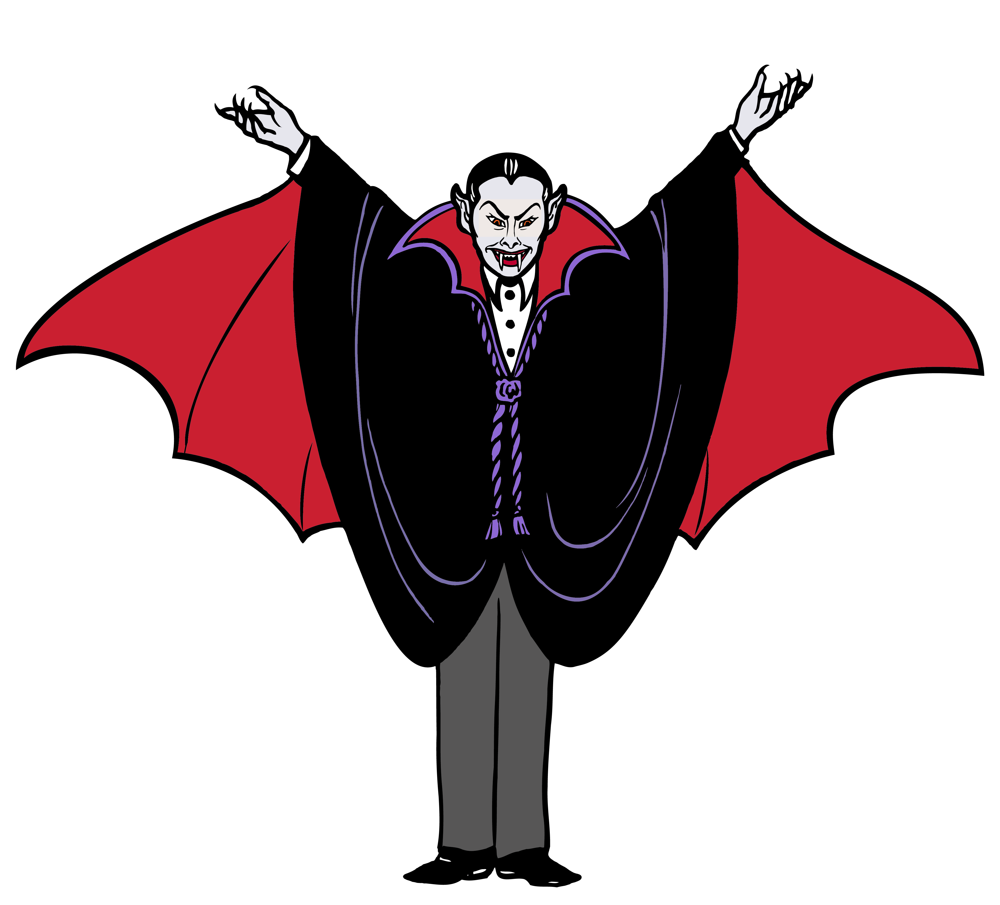
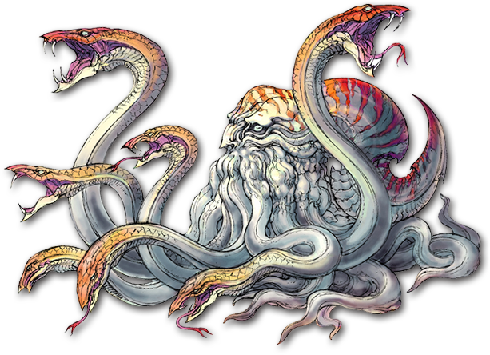
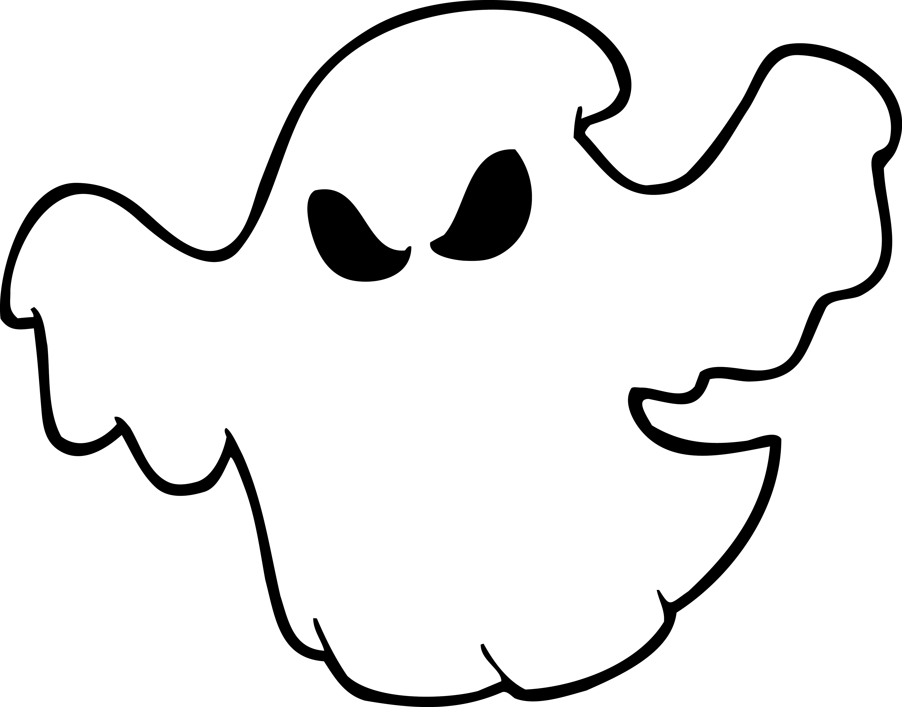
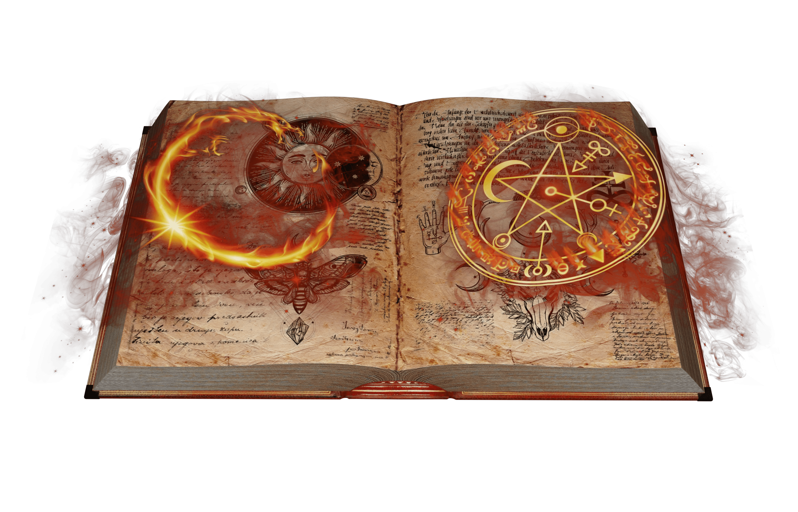

Надприродні Істоти
Від перевертнів до вампірів, досліджуйте різноманітних істот, що блукають у ночі.
- Вампіри: Безсмертні істоти, що п’ють кров.
- Перевертні: Істоти, що перетворюються на вовків під час повного місяця.
- Привиди: Духи померлих, які не знайшли спокою.
- Демони: Злі істоти, які насолоджуються хаосом і стражданнями.

Міфи Та Легенди
Історії, що передаються поколіннями, пов'язуючи наш світ із невідомим.
- Чудовисько Лох-Несс: Загадкова істота, що ховається в глибинах Лох-Несс.
- Чупакабра: Криптид, що п’є кров худоби.
- Банші: Дух, що віщує смерть члена родини.
- Кракен: Легендарне морське чудовисько, здатне топити кораблі.

Місця з Привидами
Зануртесь у моторошний світ будинків, замків і місць, оповитих загадковістю.
- Будинок-загадка Вінчестера: Велетенський маєток, в якому нібито живуть духи.
- Східна державна в'язниця: В'язниця, відома привидними зустрічами.
- Лондонський Тауер: Відомий своїми численними привидами.

Надприродні Артефакти
Предмети, які вважаються магічними чи надприродними.
- Алмаз Надії: Кажуть, він приносить нещастя своїм власникам.
- Спис Долі: Легендарний артефакт, пов'язаний із великою силою.
- Книга Мертвих: Стародавні єгипетські тексти, що, як вважається, допомагають померлим у потойбічному світі.
